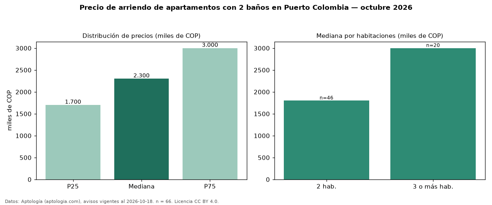

Precio de arriendo de apartamentos con 2 baños en Puerto Colombia — octubre 2026
Con 66 avisos vigentes, el canon mediano de apartamentos con 2 baños en arriendo en Puerto Colombia es COP 2,30 millones al mes. Frente a la mediana de todos los apartamentos en arriendo de Puerto Colombia (COP 2,53 millones, n = 91), queda 9 % por debajo; este segmento reúne el 73 % de esos avisos. Por metro cuadrado, la mediana es COP 31.091/m² al mes (n = 66), 3 % por debajo del conjunto de referencia (COP 31.944/m²). El área mediana anunciada es 71 m². El segmento con más oferta es el de 2 habitaciones (46 avisos, mediana COP 1,80 millones); pasar de 2 habitaciones a 3 o más habitaciones cambia la mediana +67 %. La administración mediana declarada es COP 362.000 al mes (n = 35), aparte del canon. El estrato más frecuente es 3 (52 % de los avisos con estrato). La mitad central de los avisos va de COP 1,70 millones a COP 3,00 millones (razón 1,8), una dispersión moderada. Datos: Aptología (aptologia.com), CC BY 4.0 — https://www.aptologia.com/arriendo/puerto-colombia. Archivos: PDF, CSV con las cifras y gráfica PNG.

| Avisos únicos | 66 |
|---|---|
| Percentil 25 | COP 1.700.000 |
| Mediana | COP 2.300.000 |
| Percentil 75 | COP 3.000.000 |
| Mediana por m² | COP 31.091 |
Fuente: avisos vigentes de portales inmobiliarios recopilados por Aptología, deduplicados (mínimo 30 avisos únicos por celda). Precios pedidos, no cerrados. Fecha: 2026-10-18.